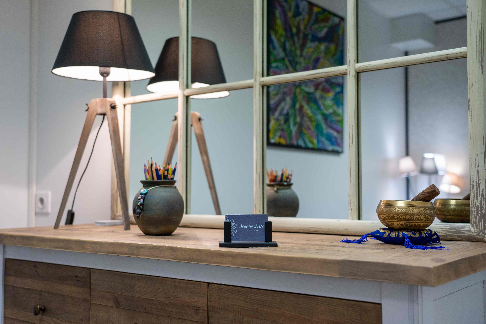

Contact
Cabinet des Chênes :
67 route de Corbeil
à Morsang-sur-Orge (91390)
( Il existe également le 67 sur cette même route de Corbeil à Sainte-Geneviève-des-Bois)
Vous pouvez me joindre par téléphone pour une première prise de contact :
07 66 00 87 56
Je serai ravie de prendre le temps de répondre à vos questions

Tarif
Séance individuelle (de 45 min à 1h) : 60 €
Certaines mutuelles remboursent la sophrologie : renseignez-vous !
L’argent ne doit pas être un frein, n’hésitez-pas à m’en parler
INFOS COVID-19 :
Les consultations en cabinet sont maintenuesPar mesure de précaution sanitaire,
la salle d'attente est fermée
Téléconsultations sur demande
Motifs de consultation fréquents :
- Concentration
- ·
- Mémorisation
- ·
- Imagination
- ·
- Autonomie
- ·
- Confiance en soi
- ·
- Sommeil
- ·
- Peurs
- ·
- Emotions
- Stress
- ·
- Mal-être
- ·
- Concentration, mémorisation
- ·
- Examens : brevet, bac, permis de conduire...
- ·
- Confiance & estime de soi
- ·
- Sommeil
- Mémorisation
- ·
- Organisation de travail
- ·
- Préparation aux examens
- (partiels, concours...)
- ·
- Stress
- ·
- Mal-être
- ·
- Sommeil
- ·
- Confiance & estime de soi
- Se détendre rapidement
- ·
- Apprivoiser les douleurs et les contractions
- ·
- Développer le lien avec bébé
- ·
- Calmer les inquiétudes liées à l'accouchement & à la parentalité
- ·
- Apprécier pleinement sa grossesse
- Calmer le mental et détendre le corps pour favoriser l'endormissement
- ·
- Apprivoiser et réduire les réveils nocturnes
- ·
- Augmenter son énergie
- Détendre le corps et apaiser le mental
- ·
- Identifier rapidement les premiers
- signes d’inconfort
- ·
- Apprivoiser la douleur
- Apaiser les peurs liées à l'intervention
- ·
- Si absence d’anesthésie générale : être actif en favorisant la détente physique
- ·
- Apprivoiser la douleur
- ·
- Favoriser la cicatrisation et le rétablissement post-opératoire
- Mieux vivre ses émotions
- ·
- Apaiser son anxiété
- ·
- Apprivoiser ses phobies
- ·
- Accepter ses complexes
- ·
- Retrouver l'équilibre suite à un burn-out
- ·
- Cheminer vers le deuil
- Apprivoiser ses ressentis
- (physiques et émotionnels)
- ·
- Etre acteur de son parcours de soins
- ·
- Accepter son corps et ses éventuels changements physiques
- ·
- Si opération : préparation mentale
- pour l'intervention
- ·
- Envisager sereinement l'après-cancer
- Concentration
- ·
- Confiance en soi
- ·
- Préparation mentale
- ·
- mobiliser pleinement ses capacités physiques, mentales et émotionnelles
- ·
- Développer ses stratégies de réussite
- Développer sa créativité
- ·
- Apprivoiser le trac
- ·
- Gagner en confiance en soi,
- prendre de l'assurance
- ·
- Préparation mentale
- Découvrir ses qualités & valeurs
- ·
- Développer la conscience (de soi, son corps, son environnement...)
- ·
- Etre à l'écoute de ses besoins
- et de ses envies
- ·
- Accueillir le changement
- (professionnel, personnel...)
- ·
- Oser réaliser ses projets de vie